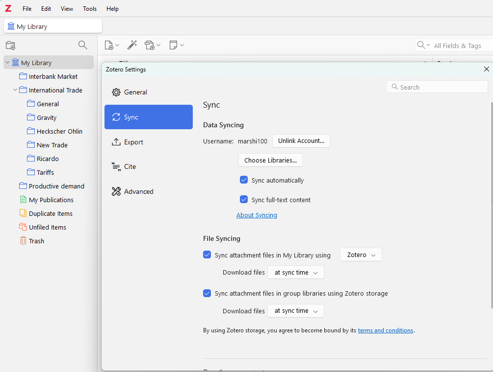
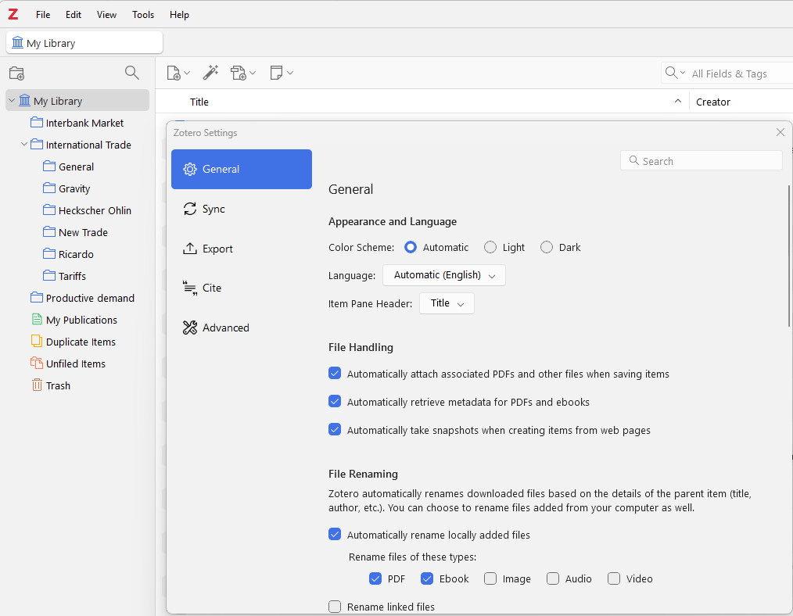

Zotero - Best Practices for Economics Students
If you're new to reading academic papers, Zotero is a powerful tool to help you get organized. It collects sources automatically, stores PDFs, lets you
annotate directly inside papers, and generates bibliographies in seconds.
This guide is written specifically for economics students who may have never read a peer-reviewed paper before. We'll cover everything
from installation to advanced workflows that will save you time when writing literature reviews or your research paper. By the end, you'll
have a clean, searchable library that grows with you throughout your studies.
Official documentation by Zotero provides more details.
Step 1: Install Zotero and Set Up
Syncing
- Go to Zoter's download pageo and download/install the Zotero desktop app (Zotero 8 as of 2026) and Zotero Connector.
- Open the Zotero Desktop App → Edit → Settings → Sync → Create a free Zotero account. Turn on syncing so your library lives in the cloud and works across all your devices.

- Enable automatic PDF retrieval in Settings → General. Many econ databases (RePEc, SSRN) will now pull the full paper automatically.

Step 2: Building Your Library
Adding items (journal articles, monographs, books, webpages etc.) creates citations, metadata, and PDFs to build your library.
- One-click from the web: Open Google Scholar, RePEc.org, SSRN, NBER Working Papers, or JSTOR. When you land on a paper, the Zotero Connector icon appears near or in the address bar (depending on your browser). Click it → “Save to My
Library.” Zotero grabs the full citation, abstract, and often the PDF.
![[Screenshot 2026-04-03 114406.png]] ![[Screenshot 2026-04-03
114330.png]]
- Drag-and-drop PDFs: Download a paper manually, then
drag it straight into Zotero. It will attempt to retrieve metadata
(author, year, title) automatically.
- Magic Wand for DOIs: Found a paper via a DOI link?
Click the magic-wand icon in Zotero and paste the DOI—metadata appears
instantly.
Step 3: Organizing Your
Library
Don’t let everything pile into one messy list. Use
collections (folders) and tags to
organize your references into economic topics, methods, or projects.
- Right-click “My Library” → New Collection.
- Suggested structure for economics students:
- Courses (e.g., International Trade,
Econometrics)
- Topics (Labor, Development, Environmental)
- Methods (IV, RDD, Difference-in-Differences,
Machine Learning)
- Literature Reviews (one per paper you’re
writing)
- To Read / Read &
Summarized
Sub-collections work too—e.g., inside “Labor Economics” you can have
“Minimum Wage Studies.”
Tags are attached to items to give a more detailed
characterization. You can filter your library according to tags,
allowing you to query your collection like a database.
- Methodology: IV, RDD, Panel, RCT, DSGE
- Data: China, Developing Countries, Administrative Data
- Status: Key Paper, Review Article, Replication
- Your own: For Thesis, Cites My Question
Step 4: Annotating Papers
Zotero built-in PDF reader is useful for annotating econ papers. 1.
Double-click any paper with a PDF attachment. 2. Use the annotation
toolbar: - Highlight key sentences (yellow for
findings, blue for methods). - Add sticky notes right
on the page. - Underline definitions or data
descriptions. 3. Extract all your highlights and notes into a clean note
with one click (right-click the PDF → “Add Note from Annotations”).
Step 5: Best
Practices for Economics Research
- Consistent file naming: Go to Preferences →
Advanced → ZotFile (optional plugin) or use Zotero 7’s built-in
renaming. Use format: Author_Year_ShortTitle.pdf.
- Sync strategy: Keep your library under 300 MB free
storage (Zotero gives you that). Store large PDFs on Dropbox/Google
Drive and link them (Preferences → Files & Folders).
- Collaboration: Share a Group Library with your
research assistant team or study group.
- Integration with the rest of your toolkit (coming
soon in this series): Export notes to Obsidian for networked knowledge
graphs, or use Zotero’s export to feed Python scripts for bibliometric
analysis.
- Backup habit: Once a month, export your library as
Zotero RDF just in case.